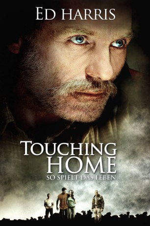
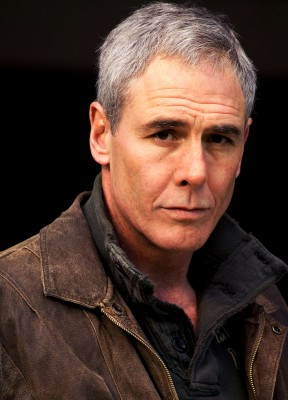
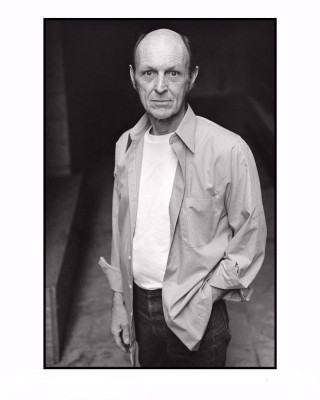

#10018 Touching Home - So spielt das Leben
 
 IMDB-Wertung: 5.8 / 10
IMDB-Wertung: 5.8 / 10  Metascore: 52
Metascore: 52 
Die Zwillingsbrüder Lane (Logan Miller) und Clint Winston (Noah Miller) sind außergewöhnlich gute Baseballspieler und haben beide den festen Willen, als Profis ihr Geld zu verdienen. Allerdings wirft Lane nicht hart genug für die Oberliga und muss zudem sein Stipendium aufgeben, weil seine schulischen Leistungen nicht ausreichend sind. Auch für Clint scheint der große Traum zu platzen, als er vom College geschmissen wird, noch bevor er sich ein Stipendium ergattern kann, weil er nicht das nötige Geld für das Studium hat. Zu allem Überfluss ist die familiäre Situation äußerst prekär: Vater Charlie (Ed Harris) ist Alkoholiker und verspielt regelmäßig beim Pokern das Ersparte der Familie. Als seine Söhne mit zerplatzten Träumen in ihr Heimatörtchen zurückkehren und dort gemeinsam mit ihm im Tagebau schuften, entwickeln sie vollkommen unterschiedliche Einstellungen zu ihrem Vater.
Jahr: 2008
Dauer: 111 Minuten
FSK: 6
Land: USA Studio: CFI ReleasingTonspuren: DTS - ,
Untertitel: Deutsch,
Auflösung: 1080p (1920x816) Größe: 7034 MB
Genre: Drama, Sport
Regisseur: Logan Miller, Noah Miller
Drehbuch: Logan Miller, Noah Miller
Soundtrack: Martin Davich
Darsteller:
 Ed Harris als Charlie Winston
Ed Harris als Charlie Winston Brad Dourif als Clyde Winston
Brad Dourif als Clyde Winston Robert Forster als Jim 'Perk' Perkins
Robert Forster als Jim 'Perk' Perkins Evan Jones als Mac
Evan Jones als Mac- Brandon Hanson als Brownie
 Lee Meriwether als Grandma Eleanor
Lee Meriwether als Grandma Eleanor-  John Laughlin als Walter Houston
-  James Carraway als Poker Player
 Richard Conti als Poker Player
Richard Conti als Poker Player George Maguire als Poker Player
George Maguire als Poker Player David Fine als Roy David Rivers
David Fine als Roy David Rivers- Kris Butler als Paramedic (uncredited)
- Larry Kitagawa als Movie Patron (uncredited)
- Logan Miller als Lane Winston
- Noah Miller als Clint Winston
- Ishiah Benben als Rachael
- Jake Waitman als Young Clint Winston
- Zack Waitman als Young Lane Winston
- Bob Harvey als Mr. Castro
- Clayt Bertlesman als Poker Player
- Rod Gnapp als Ray Rod Rivers
- Jason Holthe als Quarry Foreman
- Jai Flicker als Doctor
- Shane Richardson als Carnival Booth Worker
- Evan Engle als Junior College Tutor
- Steve Berringer als Baseball Scout
- Edgar Soto als College Baseball Coach
- Keith Francis als College Baseball Coach
- P.J. Carey als SpringTraining Coach
- Vicki Cook als Junior College Dean
- Iniobong Udosen als Extra (uncredited)
Datei: X:\2008(N-Z)\Touching Home - So spielt das Leben (2008, FSK6, 1920x816).mkv seit 20.11.2018
Festplatte: HD 2008(G-Z)-2009(A-F)
 Es gibt insgesamt 91 Filme in der Gruppe '2008(N-Z)'
Es gibt insgesamt 91 Filme in der Gruppe '2008(N-Z)'